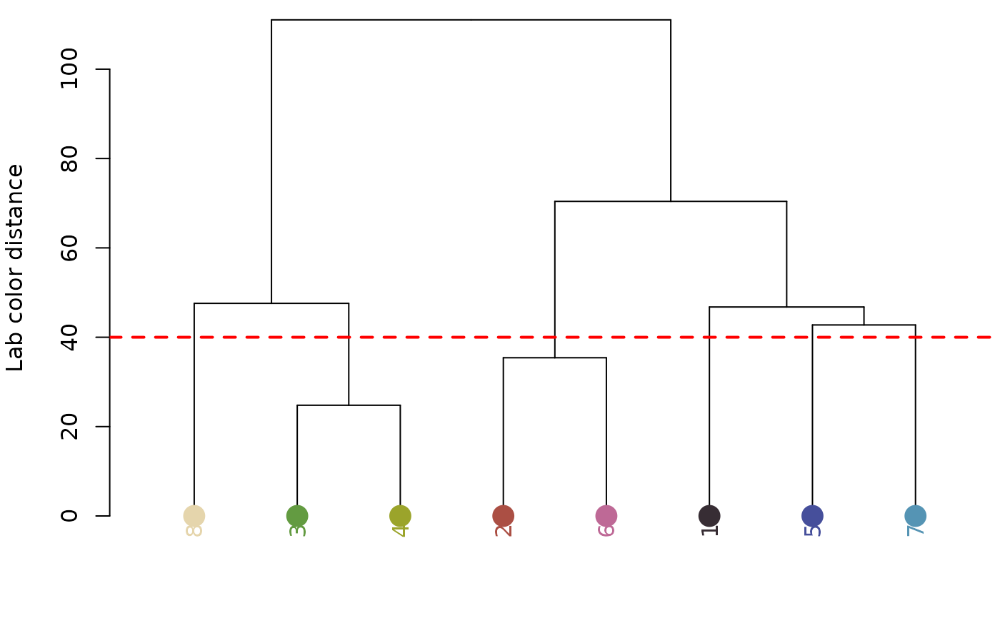
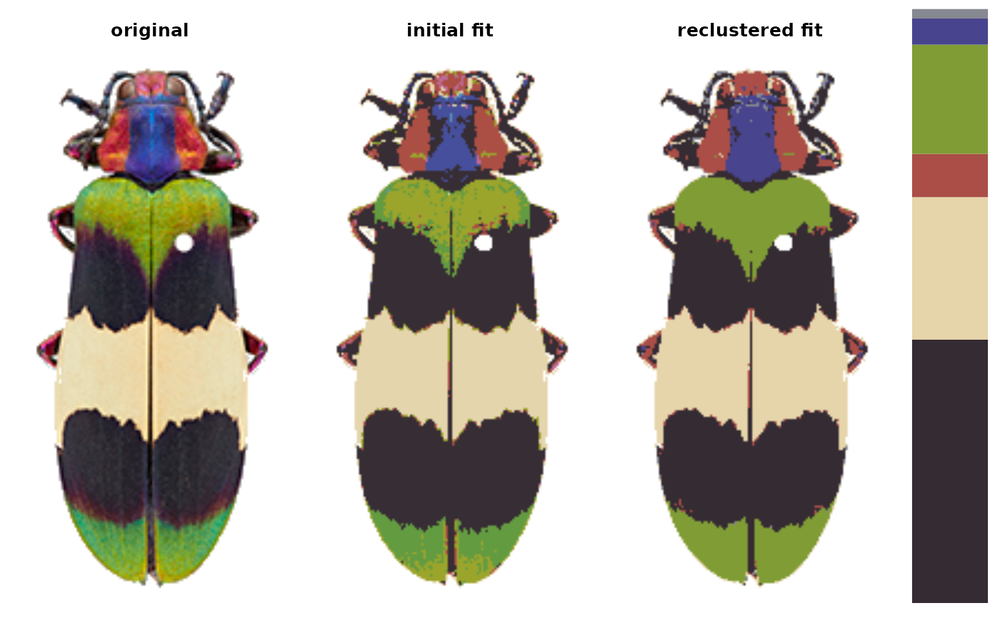
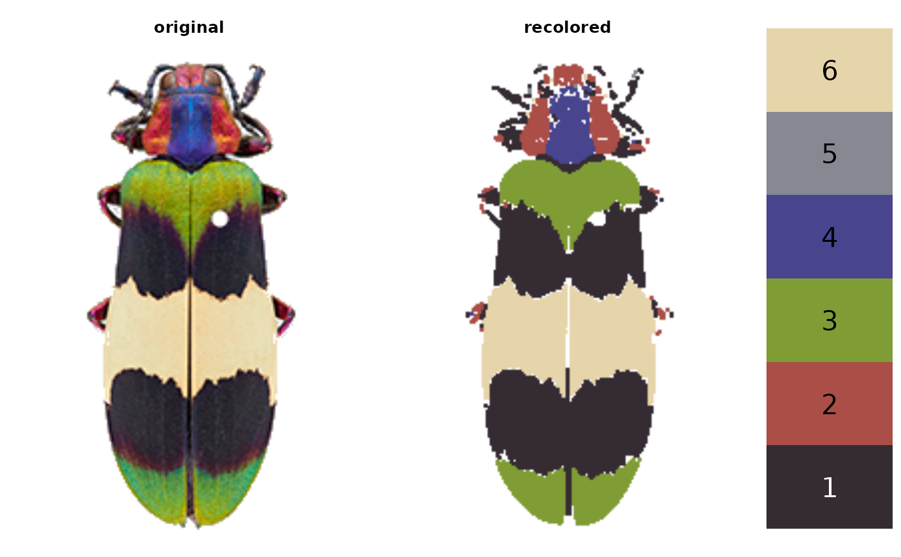
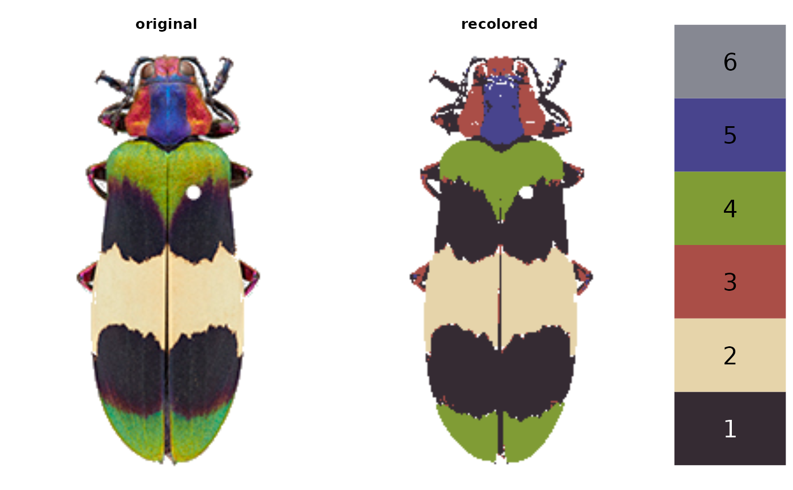
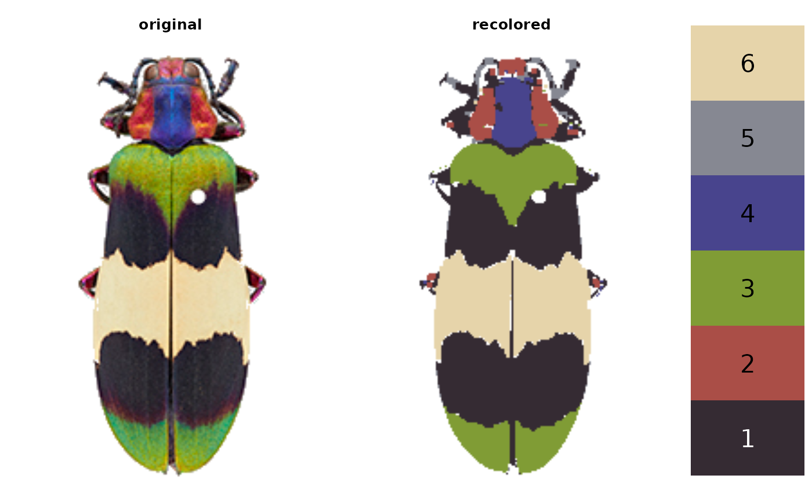
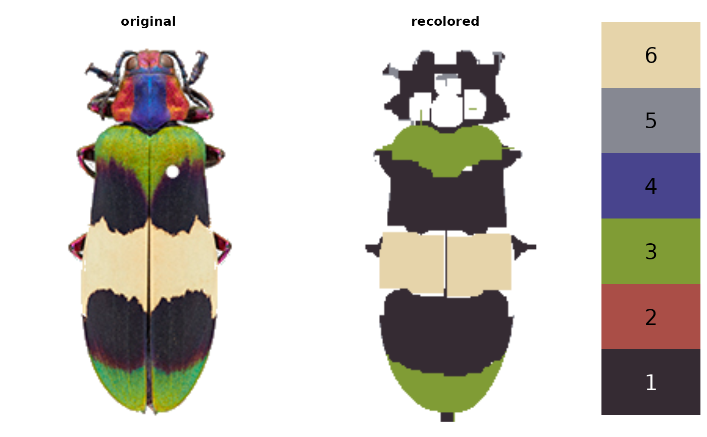
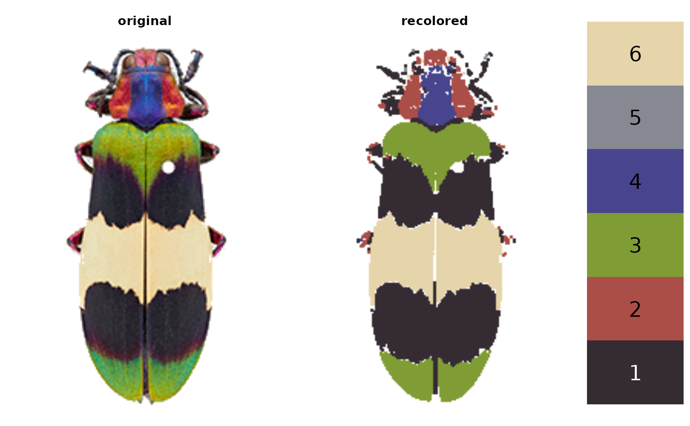
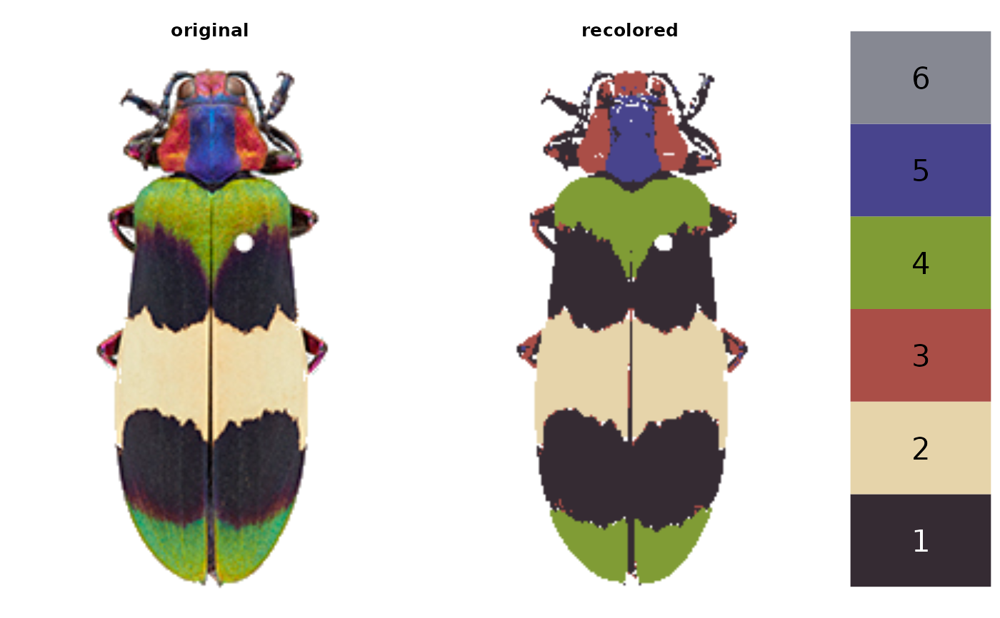
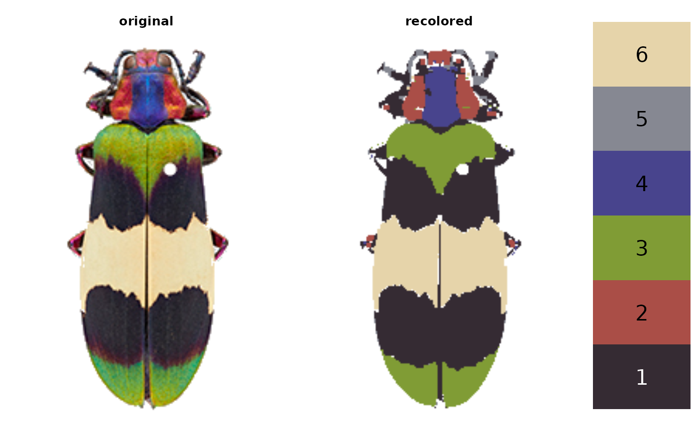
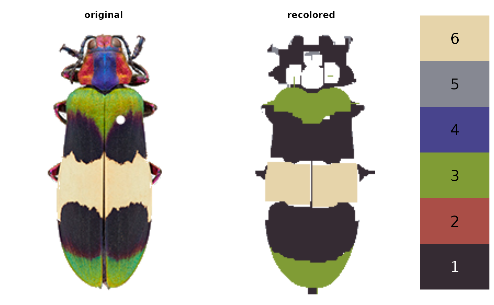

A wrapper for editLayer, allowing for multiple layers to be edited at once, either with the same morphological operation or specified for each layer.
Usage
editLayers(
recolorize_obj,
layer_idx = "all",
operations = "clean",
px_sizes = 2,
plotting = TRUE
)Arguments
- recolorize_obj
A recolorize object from
recolorize(),recluster(), orimposeColors().- layer_idx
A numeric vector of layer indices to be edited, or
"all"(in which case all layers are edited). Corresponds to the order of the colors in thecentersattribute of the recolorize object, and to the indices in thepixel_assignmentsattribute of the same.- operations
Either a single string OR a character vector of imager morphological operation(s) to perform on the specified layer(s). If this is shorter than
layer_idx, it is repeated to match the length oflayer_idx.- px_sizes
The size(s) (in pixels) of the elements to filter. Either a single number OR a numeric vector. If shorter than
layer_idx, it is repeated to match the length oflayer_idx. Ifoperation = "shrink"andpx_size = 2, for example, the color patch will be shrunk by a 2-pixel radius.- plotting
Logical. Plot results?
Value
A recolorize object. The sizes, pixel_assignments,, and
recolored_img attributes will differ from the input object for the
relevant color patches (layers) to reflect their changes.
Details
Current imager operations are:
imager::grow(): Grow a pixsetimager::shrink(): Shrink a pixsetimager::fill(): Remove holes in an pixset. Accomplished by growing and then shrinking a pixset.imager::clean(): Remove small isolated elements (speckle). Accomplished by shrinking and then growing a pixset.
See also
editLayer for editing a single layer at a time.
Examples
# load image and recolorize it
img <- system.file("extdata/corbetti.png", package = "recolorize")
# first do a standard color binning
init_fit <- recolorize(img, bins = 2, plotting = FALSE)
#>
#> Using 2^3 = 8 total bins
# then cluster patches by similarity
re_fit <- recluster(init_fit, cutoff = 40)


# to reset graphical parameters:
current_par <- graphics::par(no.readonly = TRUE)
# examine individual layers:
layout(matrix(1:6, nrow = 2))
layers <- splitByColor(re_fit, plot_method = "color")
 # we can clean them all using the same parameters...
edited_fit <- editLayers(re_fit, layer_idx = "all",
operations = "clean",
px_sizes = 2, plotting = TRUE)

# ...but some of those patches don't look so good
# we can use different px_sizes for each layer:
edited_fit_2 <- editLayers(re_fit, layer_idx = "all",
operations = "clean",
px_sizes = c(1, 3, 1,
2, 1, 2),
plotting = TRUE)

# better yet, we can fill some layers and clean others:
edited_fit_3 <- editLayers(re_fit, layer_idx = "all",
operations = c("fill", "clean",
"fill", "fill",
"fill", "clean"),
px_sizes = c(2, 3,
2, 2,
4, 2))

# or you could just get weird:
edited_fit_3 <- editLayers(re_fit, layer_idx = c(1:6),
operations = c("fill", "clean"),
px_sizes = c(10, 20))

# reset graphical parameters:
graphics::par(current_par)
# we can clean them all using the same parameters...
edited_fit <- editLayers(re_fit, layer_idx = "all",
operations = "clean",
px_sizes = 2, plotting = TRUE)

# ...but some of those patches don't look so good
# we can use different px_sizes for each layer:
edited_fit_2 <- editLayers(re_fit, layer_idx = "all",
operations = "clean",
px_sizes = c(1, 3, 1,
2, 1, 2),
plotting = TRUE)

# better yet, we can fill some layers and clean others:
edited_fit_3 <- editLayers(re_fit, layer_idx = "all",
operations = c("fill", "clean",
"fill", "fill",
"fill", "clean"),
px_sizes = c(2, 3,
2, 2,
4, 2))

# or you could just get weird:
edited_fit_3 <- editLayers(re_fit, layer_idx = c(1:6),
operations = c("fill", "clean"),
px_sizes = c(10, 20))

# reset graphical parameters:
graphics::par(current_par)